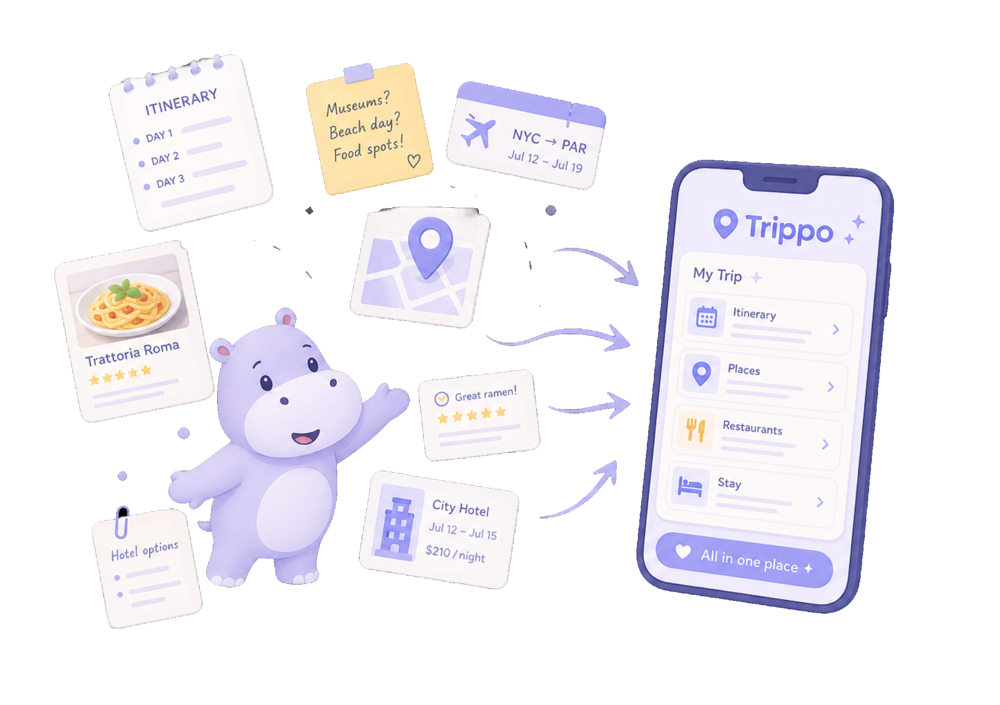
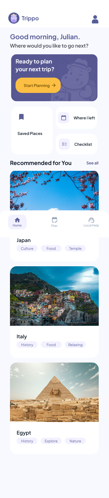
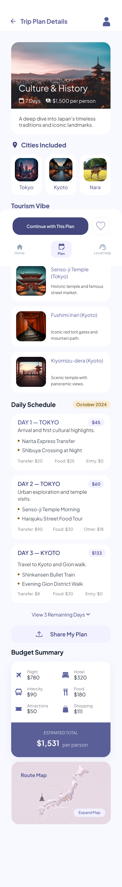
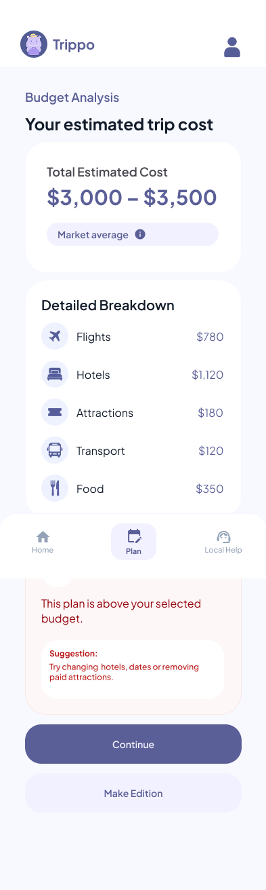
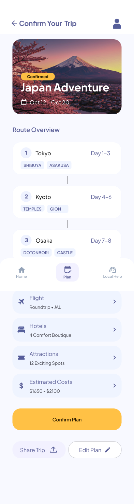

Mobile App / Travel Planning / Protothon Winner
Trippo
A phone-based travel planning app that helps users move from destination inspiration to itinerary details, budget awareness, and final trip confirmation.

Snapshot
A travel app prototype recognized with 3rd place at Dubstech Protothon 2026.
Mobile travel planner
Dubstech Protothon 2026 3rd place
Destination discovery, trip details, budget visibility, confirmation flow
Interactive phone app prototype for Dubstech Protothon 2026
Product logic
The experience follows a simple planning path: discover, compare, adjust, confirm.
Discover destinations
The home screen starts with a friendly planning prompt and recommended places, helping users enter the flow without needing to know every detail yet.
Review the plan
The trip details screen gathers cities, attractions, daily schedule, budget, and route context so users can judge whether a plan feels realistic.
Resolve constraints
Budget feedback gives users a clear warning when the estimated cost is too high, then suggests practical edits before they continue.
Confirm the trip
The final confirmation screen turns the itinerary into a saved plan with route, flight, hotel, attraction, and sharing actions in one place.
Screen sequence
Only the key phone screens are shown, in the order the user would experience them.
Home: choose where to go next
Trippo opens with recommendations and compact planning shortcuts, so the user can browse options or jump into the next trip.

Trip details: understand the full plan
The plan view combines cities, tourism vibe, attractions, daily schedule, budget summary, and a route map so users can evaluate a trip in context.

Budget analysis: catch problems early
When a plan is above budget, Trippo flags it directly and gives a practical suggestion instead of leaving the user to recalculate everything alone.

Confirm trip: package the decision
The confirmation screen brings route overview, flight, hotel, attraction, estimated cost, share, and edit actions into one final review point.

Outcome
The prototype received 3rd place at Dubstech Protothon 2026.
Trippo’s strength is that it makes trip planning feel more organized without becoming heavy. The prototype connects destination inspiration, itinerary structure, estimated cost, and confirmation into one mobile flow that feels calm and decision-ready.
Reflection
A good travel app should reduce decision overload.
Trippo helped me think about how mobile design can organize complex planning information without making users feel trapped inside forms and tables.
The key design challenge was rhythm: giving users enough detail to trust the plan, while keeping the screens light enough to keep exploring.